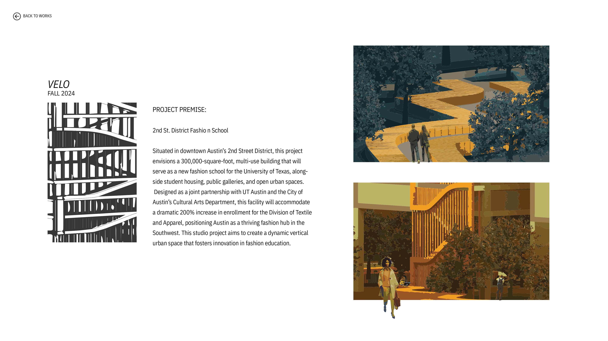

velo
Fall 2024 | Design V
Professor Erica Quinones
Located in downtown Austin, the project envisions a new academic building for the University of Texas. Designed for a space of a potential fashion school, dormitory and art space with a projected 200% increase in enrollment for the division of textiles and apparel.
